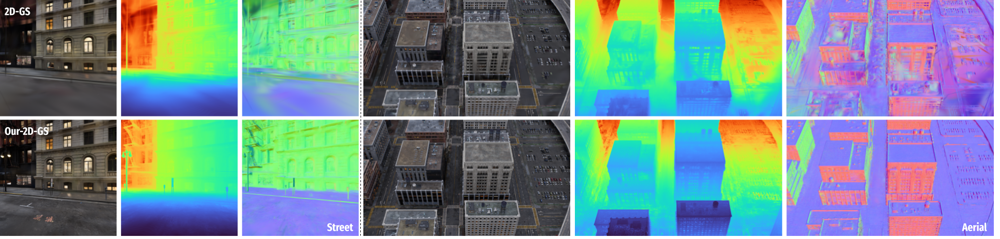

Results
Rendering Performance
Compared to baselines, Horizon-GS successfully captures fine details in the scene, particularly for objects with thin structures such as trees, decorative texts, etc, from delicate scenes (a) to large-scale scenes (b).

Surface Performance
Thanks to the two-stage training approach, Horizon-GS can delivers geometrically accurate, and artifact-free reconstruction. In contrast, 2D-GS introduces artifacts, resulting in incomplete and lackluster geometry.
